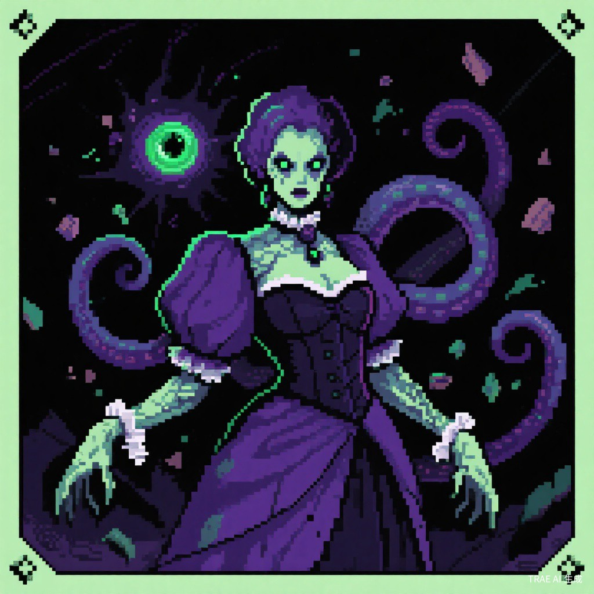

Key Points
- ✓ 20+ boss encounters confirmed including dungeon bosses, tower climbs, and story bosses
- ✓ Thorne is fought 3 times throughout the story as the main antagonist
- ✓ Tower Climb sequences precede major dungeon bosses
- ✓ Bosses can be challenged in any order - non-linear progression
- ✓ Master the burrow mechanic for dodging boss attacks
- ✓ Use Sparks to prevent Bone loss while learning boss patterns
- ✓ Adjust Trinkets and difficulty modifiers if struggling
Confirmed Bosses
Fully documented boss encounters

Eldritch Horror BossThe Duchess of Queensbury
Queensbury CryptThe Duchess of Queensbury is an eldritch horror that serves as the boss of the Queensbury Crypt dungeon. As a being of cosmic terror, the Duchess embodies the dark, gothic themes of the crypt with a design that blends aristocratic elegance with grotesque, otherworldly horror.
The fight takes place within the deepest chambers of the crypt, where the Duchess commands the undead and unleashes eldritch attacks that fill the arena. This encounter tests the player's mastery of the burrow mechanic, as dodging her wide-area attacks requires precise underground movement and well-timed pop-up strikes.
The Duchess may be connected to the Duke, a timid character searching for his lost love. Whether the Duchess truly is the Duke's long lost companion or merely masquerading as such remains a dark mystery. (Source: minathehollower.wiki.gg)
Community Tips (Unverified)
These tips are based on general game mechanics and community discussion. They have not been verified against the actual boss fight.
- Watch for telegraph animations: Most bosses in the game signal their attacks ahead of time. Pay close attention to the Duchess's movements so you can react with a well-timed burrow to avoid damage.
- Stay underground during big attacks: The burrow grants invincibility frames, making it your best defensive option against wide-reaching attacks. Drop below the surface when the Duchess winds up, then resurface during the recovery window to land hits.
- Pop up for aerial strikes: Emerging from a burrow launches Mina upward, and the resulting aerial attack deals bonus damage. Position yourself beneath the Duchess before surfacing to capitalize on this extra damage window.
- Keep your Plasma bar active: Since attacking refills your Plasma (which converts to healing), staying on the offensive is its own form of defense. Look for safe moments between the Duchess's attack strings to land a few hits and sustain yourself.
- Equip helpful Trinkets: Depending on your approach, Trinkets that boost damage output or increase survivability can make a noticeable difference. Experiment with different loadouts to find what suits your playstyle.
- Carry Sparks for safety: If you have Sparks available, consider using them before learning a new boss. They prevent Bone loss on death, removing the penalty of trial-and-error while you study the encounter.
Recommended
🎮 Play More Great Indie Games →Expected Bosses
The 6 dungeon areas and their anticipated bosses
Each of the 6 dungeon areas in Tenebrous Isle contains a Spark Generator that Mina must repair. Each area culminates in a boss encounter guarding or related to these generators. While not all boss names have been confirmed, the following table lists the known and expected bosses for each area:
| Dungeon Area | Boss Name | Status |
|---|---|---|
| Loner's Landing (Tutorial) | Nether Kraken | CONFIRMED (Tutorial Boss) |
| Queensbury Crypt | The Duchess of Queensbury | CONFIRMED |
| Nox's Bayou | Nox Beast (Mini-Boss: Mock Moon) | CONFIRMED |
| Septemburg | Maxi (Area also features a children rescue side quest — 3 children — rewarding a trinket) | CONFIRMED |
| Bone Beach | Madd House + Miner Dwarf Boss | CONFIRMED (Two Bosses) |
| Frozen Trainyard | Frozen Horror (previously known as Brain Boss) | CONFIRMED |
| Astral Orrery | Congulant | CONFIRMED (Toughest Fight) |
New Info (June 12): The complete list of 9 hidden bosses is now confirmed through multiple Chinese game guide sources (18183.com, xiayx.com, 9game.cn, all published June 8-9, 2026). The 9 hidden bosses are: Midden (Queensbury Crypt Ancestor Chamber), Maxi (Ossex ambush after first dungeon), Armand (blacksmith quest line), Dookin (find Ack and Dark, fight twice), Willis (frog band reunion), Dark Diracy (dual spark slot door + escort Laksey), Mirren (Coltrane Peak Frostbite Forest abandoned train car), Evra (courtyard east side, 3 Plasma Vial door mini dungeon), Thalassion (fishing collection line). The game has approximately 28 total bosses and 60 trinkets across 17 main areas. New area bosses confirmed: Carving Man (Kindlewood, controls stone statues, invincible in first encounter), Train Conductor Agnes (Bone Beach, controls entire train), Mr. Fergus (puppet-wielding boss). Yacht Club Games has confirmed no free DLC is planned for Mina the Hollower. [CONFIRMED - Sources: 18183.com, xiayx.com, 9game.cn, 163.com, June 8-12, 2026]
New Info (June 10): Mock Moon detailed guide confirmed — located in Nox's Bayou's Moonlit Path, accessible via moving lily pads in Big Lagoon. Two-phase fight: Phase 1 uses standard attacks; Phase 2 (red health bar) darkens the arena — preserved candles become crucial light sources. Recommended weapons: Blaststrike Maul (close-range), Battery Buster or Nightstar (ranged). Avoid Void Hatchet and Gyro Dagger due to precision requirements. Reward: Iron Lung Trinket (extends burrow duration) + Mirror (teleport network connector). Steady Soles trinket from Ossex fountain chest helps with lily pad platforming. (Source: 163.com/NetEase Hidden Boss Guide)
New Info (June 15): Hidden Ending confirmed — discovered by YouTuber ChickenSoup and reported by Polygon/17173. To trigger the hidden ending, players must avoid giving Lionel any reason to condemn Mina: do NOT defeat Mock Moon (optional boss), do NOT break any lamps or candles, use the train ONLY ONCE (first Coltrane Peak visit), talk to the captain and take him with you, skip the orphanage ribbon-cutting, rescue all 3 children, activate the swamp generator, donate to all 7 beggars, sell one item to the pawn shop, do NOT kick children's cans. This is one of the most restrictive hidden ending conditions in recent gaming history. [CONFIRMED - Sources: Polygon, 17173.com, bilibili video BV1QT7k6JEyc, June 5-9, 2026]
New Info (June 15): Complete 17-area world map confirmed via 18183.com guide (June 9, 2026). The game world consists of: 1. Eastern Heath, 2. Southern Outskirts, 3. Nox's Bayou, 4. Western Wilds, 5. Knight's Rest, 6. Path of Mourning, 7. Queensbury Crypt, 8. Backwaters, 9. Mirror's End, 10. Kindlewood, 11. Septemburg, 12. Coltrane Peak, 13. Astral Orrery, 14. Radiant Manor, 15. Sandfalls, 16. Bone Beach, 17. Ossex (town hub). Each area has unique terrain, enemy distribution, collectibles, and hidden secrets. [CONFIRMED - Source: 18183.com, June 9, 2026]
New Info (June 16): Official Wiki Boss Pages Confirmed — minathehollower.wiki.gg has added dedicated boss pages for Evra the Undying and Nox's Beast, confirming these as official Boss-class enemies (alongside The Duchess of Queensbury). The wiki's enemy navbox now categorizes enemies into: Bosses (Evra the Undying, Nox's Beast, The Duchess of Queensbury), Mini-bosses (Hulk Trooper), and Basic Enemies (Brittle Beak, Gooper). The official wiki also confirms the complete 15 Sidearms list with Joule costs: Hollower's Rocks (1), Fog Thrower (1), Fishing Rod (2), Gyro Dagger (2), Angler's Raft (3), Beckoning Collar (3), Deflector Parasol (3), Gnawing Ghosts (3), Mist Jar (3), Recall Disc (3), Volt Hatchet (3), Bounding Bombs (4), Driver Drill (4), Iron Steed (4), Dynamo Lantern (5). Additionally, the Nether Kraken (tutorial boss) has been confirmed as defeatable on a first playthrough without New Game+ — players discovered a strategy to beat it with starting equipment within 48 hours of launch. [CONFIRMED - Sources: minathehollower.wiki.gg, 163.com/NetEase, June 13-16, 2026]
New Info (June 22 - Daily Update): Game Release & Reviews Confirmed — Mina the Hollower officially released on May 29, 2026 for PS5, Nintendo Switch, Xbox, and PC. The game has received widespread critical acclaim, with IGN awarding it a 10/10 and Metacritic scoring it at 93/100 based on 40+ reviews. The game features over 25 bosses and elite enemies, 60 trinkets, and 282+ collectibles across a massive interconnected world. No DLC is planned according to Yacht Club Games. [CONFIRMED - Sources: 100pguides.com, IGN, Metacritic, gcores.com, June 15-22, 2026]
New Info (June 22 - Daily Update): New Boss Details from Chinese Guides — The 18183.com guide confirms 60 trinkets scattered throughout the world, obtainable through exploration, defeating specific enemies, and purchasing from merchants. The gcores.com community review (16-hour initial clear, 30-hour 100% completion) confirms the game has 177 assist options in the settings menu, including modifiers for jump height, infinite HP, one-hit kills, and even screen rotation. The 7xz.com guide confirms the Mirror system — players must enter every mirror they find to activate switches that unlock the Astral Orrery, where one of the six Spark Generators is located. The Primordial Spark trinket (obtained after repairing the Spark Generator in Queensbury Crypt) acts as a second life, automatically reviving Mina with full health upon death. [CONFIRMED - Sources: 18183.com, gcores.com, 7xz.com, June 15-22, 2026]
New Discovered Areas
Additional regions and areas confirmed through gameplay guides and community footage
Beyond the 6 main dungeon areas, the following regions have been confirmed through gameplay guides and community footage. These areas serve as transition zones, exploration areas, or contain unique gameplay features.
| Area Name | Description | Source |
|---|---|---|
| Loner's Landing | Tutorial/opening area. Players begin here and face the Nether Kraken tutorial boss. | 100pguides.com |
| Eastern Heath | Transition area northeast of Ossex. Connects to other regions on the eastern side of the map. | 100pguides.com, 163.com |
| Mourner's Mile | Path leading to Queensbury Crypt. A somber route players must traverse to reach the crypt dungeon. | 163.com |
| Backwaters | Waterway area featuring a shop and fishing rod. Related to the Frog Escort Event from Nox's Bayou. | 100pguides.com |
| Kindlewood | Northwestern area known for wind and thunderstorm weather effects. A forested region with environmental hazards. | 163.com |
| Sandfalls | A newly confirmed area name. Details about collectibles and exploration in this region have been documented. | 100pguides.com |
| Coltrane Peak | Snow mountain area accessible only by train. The train ride costs 10,000 bones. A late-game destination. | 163.com |
| Western Wilds | Western region featuring an Occupied Bridge that must be dealt with to progress through the area. | 163.com |
| Crow Town | An area featuring crow-related puzzles. Players must solve these puzzles to progress or unlock secrets. | 163.com |
| Stomach Caves | A cave area featuring bug-back (insect mount) traversal and tent structures. Unique organic environment. | 163.com |
| Radiant Manor / Radiant Manor Foyer | Area related to the Astral Orrery (astrolabe). The manor foyer serves as an entrance or hub section. | 100pguides.com |
| Mirror's End | Astral Orrery hub area. Serves as a central nexus point related to the astrolabe mechanism. | 163.com |
Hidden Bosses (9 Confirmed)
Secret and optional boss encounters discovered through exploration and community footage
Beyond the main dungeon bosses and story encounters, Mina the Hollower contains 9 hidden/optional boss fights that require specific triggers, exploration, or quest completion. These bosses often reward unique Trinkets and unlock new gameplay features. Below are the confirmed hidden bosses discovered through community gameplay footage and guides.
| # | Boss Name | Location | Reward | Status |
|---|---|---|---|---|
| 1 | Ancestor Chamber Boss | Queensbury Crypt - Ancestor Chamber | Fly Bait Trinket | CONFIRMED |
| 2 | Maxi | Ossex Ambush (return from Queensbury) | Trinket Pouch (expand trinket slots) | CONFIRMED |
| 3 | Armand | Ossex Blacksmith (Legovich's shop) | Unlocks blacksmith shop (functional) | CONFIRMED |
| 4 | Darkin | Ossex High Street (random spawn) | Lace Glove | CONFIRMED |
| 5 | Frog Escort Event | Nox's Bayou (post-Nox Beast) | Tutu Ballet (trinket) | CONFIRMED |
| 6 | Mock Moon | Nox's Bayou - Moonlit Path (hidden) | Iron Lung Trinket + Mirror | CONFIRMED |
| 7 | Willis (Frog Band Boss) | Nox's Bayou (complete frog band reunion) | TBD | CONFIRMED |
| 8 | Dark Diracy | Dual Spark Slot door + escort Laksey | TBD | CONFIRMED |
| 9 | Mirren | Coltrane Peak - Frostbite Forest (abandoned train car) | TBD | CONFIRMED |
| 10 | Evra | Courtyard east side - 3 Plasma Vial door (mini dungeon) | TBD | CONFIRMED |
| 11 | Thalassion | Fishing collection line (catch key items) | TBD | CONFIRMED |
| 12-14 | Music Hall Shark Pirate Series | Ossex Bowery District (Music Hall) | TBD | UNCONFIRMED |
Known Antagonists
Characters mentioned in previews and promotional material
Thorne
A rebellious bat soldier who leads the antagonistic forces on Tenebrous Isle. Thorne has destroyed Mina's Spark Generators and opposes her efforts to repair them. (Source: Polygon review)
Thorne is fought 3 times throughout the story (Round 1 early game, Round 2 mid-game, Round 3 late game). Confirmed as a multi-phase boss encounter. (Source: Kakuchopurei gameplay footage)
Baron Lionel
Baron Lionel is the authority figure in Ossex who tasks Mina with repairing the Spark Generators after they were destroyed by Thorne's forces. (Source: Polygon review)
Boss status and location unconfirmed.
The Duke
A named antagonist whose connection to the Duchess of Queensbury and the broader lore of Tenebrous Isle remains to be fully revealed. The Duke likely holds a position of power within the isle's hierarchy.
Boss status and location unconfirmed.
The Carving Man
The Carving Man is a confirmed boss encounter in the Kindlewood area. He appears first as an invincible chase sequence — players cannot damage him during this initial encounter and must push him to the end of the area. After a story unlock, the real boss fight becomes available. In combat, the Carving Man continuously summons stone statues to fight alongside him. (Source: 18183 full walkthrough, Bilibili video guides)
🃏 Special Encounter: The Jester (Ossex)
A special NPC encounter in Ossex — a jester wearing an animal costume can be found near the northeast corner of the Ossex fountain. If you agree to listen to his jokes when prompted, he will randomly appear throughout your adventure over the next several hours, delivering surprise jump scares with dark humor. His appearances are unpredictable — he can show up during combat, while exploring, or even in seemingly safe areas. This is a unique "consequence of choice" mechanic where your dialogue decision has lasting effects on the gameplay experience.
Additional Boss Encounters
More confirmed bosses from gameplay footage
In addition to the 6 dungeon bosses, the game features numerous other boss encounters including tower climbs, story bosses, and mini-bosses. The following have been confirmed through gameplay footage:
| Boss Name | Type | Status |
|---|---|---|
| Tentacle Boss | Early Game Boss | CONFIRMED |
| Rabbit Boss | Story Boss | CONFIRMED |
| Snow Mountain Bosses | Frozen Trainyard Area | CONFIRMED |
| Radiant Manor Bosses | Late Game Area | CONFIRMED |
| Final Boss | End Game | CONFIRMED |
| Tower Climb Sequences (×4) | Escalation Challenges | CONFIRMED |
| Western Wilds Bridge Boss (Optional) | Western Wilds - Bridge | CONFIRMED |
| Carving Man | Kindlewood Area Boss (controls stone statues, invincible on first encounter) | CONFIRMED |
| Train Conductor Agnes | Bone Beach Area Boss (controls train, accelerating/changing tracks) | CONFIRMED (Unconfirmed exact area - may be Frozen Trainyard) |
| Mr. Fergus | Puppet-wielding Boss | CONFIRMED |
| Immortal Evra | Hidden Boss (summons skeleton armies with flanking patterns) | CONFIRMED |
General Boss Strategies
Universal tips that apply to all boss encounters
Core Principles for Every Boss Fight
-
1
Learn Attack Patterns
Every boss has a set of attack patterns with clear telegraphs. Spend your first attempts observing rather than attacking. Once you recognize the tells, you can dodge consistently and find your openings.
-
2
Grind Bones for Upgrades
If a boss feels too difficult, spend time in other areas grinding Bones. Use them at the Underlabs to increase your attack power, health, and other stats. Even a few upgrade levels can make a significant difference.
-
3
Adjust Your Trinkets
Each boss may require a different Trinket loadout. For damage races, equip Attack Multiplier and offensive Trinkets. For survivability, use Health Boost and Prototype Spark. Experiment to find what works.
-
4
Master the Burrow Mechanic
The burrow is your primary defensive tool in boss fights. It provides invincibility frames and lets you reposition quickly. Practice burrow-to-pop-up combos for both defense and offense.
-
5
Keep Plasma Vials Full
Aggressive play is rewarded in Mina the Hollower. Attack enemies to fill your Plasma bar, which converts to red health. Don't play passively -- the more you hit, the more you heal.
-
6
Use Sparks as Insurance
Sparks act as extra lives that prevent Bone loss on death. Before a tough boss, consider spending resources to acquire Sparks. They remove the penalty of learning a fight through failure.
-
7
Try a Different Area
Remember, the game is fully non-linear. If a boss is giving you trouble, leave and explore a different area. You may find new weapons, Trinkets, or upgrades that make the fight much easier when you return.
-
8
Don't Fear Difficulty Modifiers
The game includes an extensive assist menu. If you just want to experience the story or are stuck after many attempts, use the available modifiers. There is no penalty for adjusting difficulty.